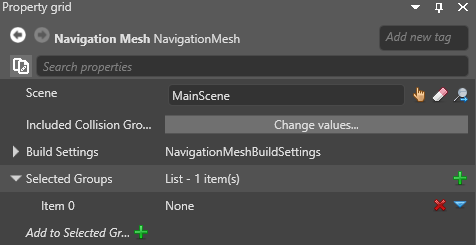
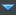
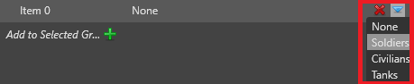
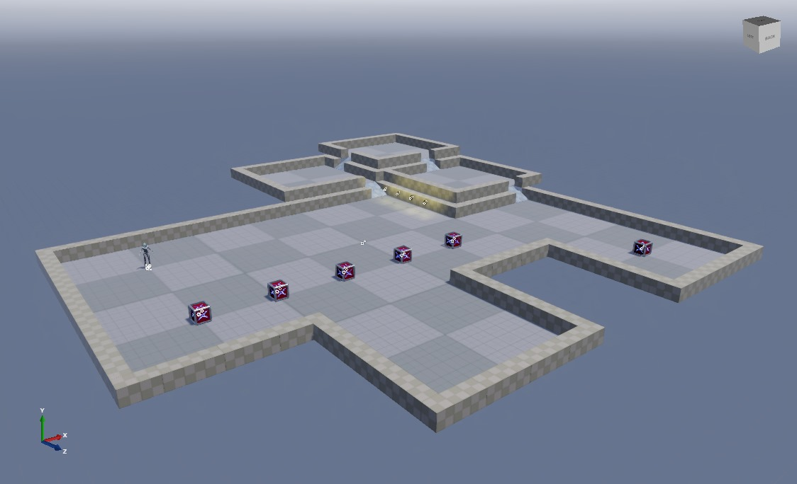

ナビゲーション メッシュ
初級 レベル デザイナー プログラマー
ナビゲーション メッシュは、ナビゲーション コンポーネントを持つエンティティがナビゲートできる領域を形成します。作成された各ナビゲーション グループに対して、ナビゲーション メッシュにレイヤーが作成されます。
Game Studio では、ナビゲーション メッシュはシーン内の色付きのオーバーレイとして表示されます。このオーバーレイは、そのレイヤーのナビゲーション グループ内のエンティティが移動できる場所を示します。シーンを編集すると、メッシュがリアルタイムで更新されます。
ナビゲーション メッシュを作成する
［Asset view］(既定では下部) で、［Add asset］>［Scenes］>［Navigation mesh］の順にクリックします。
［Navigation Mesh］アセットがプロジェクトに追加されます。
［Asset view］で［Navigation Mesh］を選択し、［Property grid］でこのアセットの［Navigation Mesh］を適用するシーンを選択します。
シーンの詳細については、「シーン」を参照してください。
［Selected groups］で
 (［Add a new item to the list］) をクリックします。
(［Add a new item to the list］) をクリックします。新しい項目がグループのリストに追加されます。

 (［Change...］) をクリックし、ドロップダウン メニューからグループを選択します。

ナビゲーション メッシュにこのグループのレイヤーが作成されます。作成方法など、グループの詳細については、「ナビゲーション グループ」を参照してください。
ナビゲーション メッシュを使用するすべてのグループについて、ステップ 3 と 4 を繰り返します。
Note
異なるシーンのナビゲーション メッシュを作成する場合は、別のナビゲーション メッシュ アセットを作成し、アセットの プロパティでシーンを選択します。
ナビゲーション メッシュのプロパティ
| プロパティ | 説明 |
|---|---|
| Scene | このナビゲーション メッシュが適用されるシーンです。 |
| Included collision groups | ナビゲーション メッシュが使用する衝突グループを設定します。既定では、メッシュはすべての衝突グループを使用します。 |
| Build settings | ナビゲーション メッシュの高度な設定です。 |
| Groups | このナビゲーション メッシュを使用するグループです。 |
シーン エディターでナビゲーション メッシュの表示と非表示を切り替える
シーン エディターのツールバーのナビゲーション可視性メニューを使用します。
異なるグループに属するレイヤーを表示または非表示にするには、チェックボックスを使用します。色付きのボックスは、シーン エディターに表示されるグループの色を示します。
| ナビゲーション メッシュ非表示 | ナビゲーション メッシュ表示 |
|---|---|
|  |
これらのオプションは実行時の動作には影響しません。